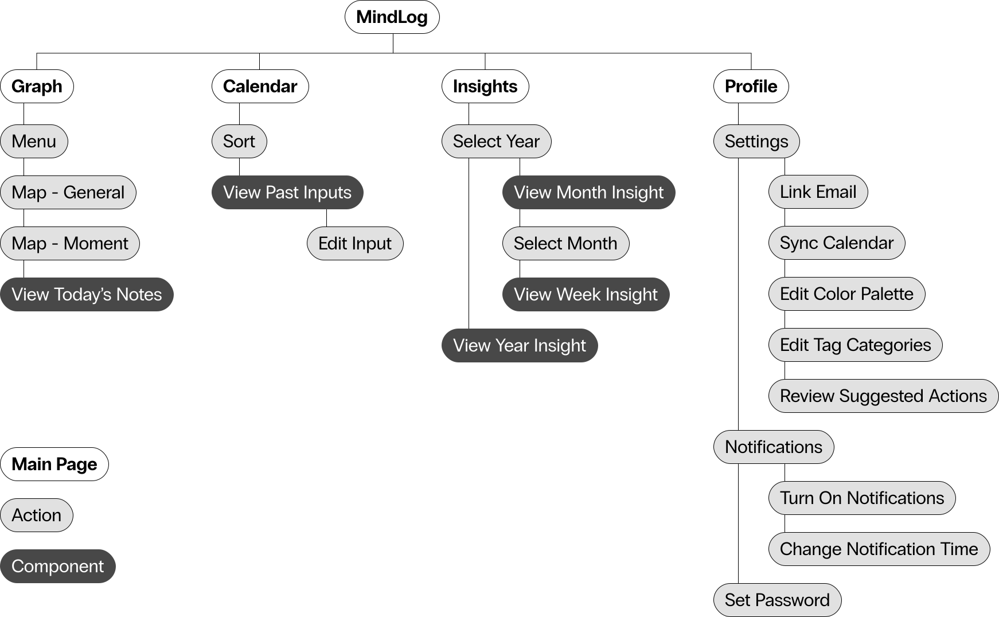

Young adults acknowledge their mental health issues but lack
sustainable and accessible methods of tackling them.
The topic of mental health is less stigmatized in the current
generation of young adults, but many of us grapple with factors
like cost, time, and resources to engage with our own mental
health in meaningful and effective ways. How can we change this?
research
Research Objectives
Investigate young adults’ attitudes toward mental health and how
they talk about it.
Investigate ways young adults care for their own mental health.
Understand factors that inhibit young adults from seeking mental
health care.
Understand how inadequate mental health care affects young
adults.
Investigate the physical and virtual spaces young adults discuss
mental health in.
desk research
Perceived stress in stress-inducing experiences is a major factor
in low mental health.
I began with desk research, and this important and surprising slap
stat stuck out to me. Perceived stress includes all aspects of
external sources of stress relevant to an individual rather than
the source of stress by itself. In other words, it’s the
individual’s feelings on how much stress they’re experiencing from
a single source.
User Interviews & Survey
From my user interviews in my target demographic (18-35 years
old), I combined my findings with my desk research to affinity map
and synthesize them.
insights & opportunities
Through synthesizing and analyzing my research, I was able to
pinpoint three major insights and draw subsequent areas of
opportunity from them.
solution
Create a routine of personal, meaningful reflection over time.
By engaging individuals in consistent meaningful self-reflection,
they’ll eventually build resilience in working through stress,
anxiety, and other negative impacts. As a result, when stressful
situations occur, individuals will have a greater sense of control
over their selves and mental state.
user empathy
I created user archetypes based on the user behavior and
preferences I gathered from my research. I specifically chose to
create archetypes rather than personas because I wanted to focus
more specifically on users’ needs and how to target those needs
and felt other descriptive information in this case was
irrelevant, as I already had a target demographic established.
To further empathize with the user's behavior, I created a journey
map of current mental health help methods that would cause users
to keep encountering hindrances to maintaining their mental
health.
competitor analysis
I conducted a competitor analysis on three other popular apps
focused on mental health improvement and stress reduction.
Overall, I found that Calm and Headspace were focused on using
regular methods such as meditation and ASMR sounds to help the
user without seeking to identify the causes of users' issues or
provide insight to mental health trends. Woebot, while using
Cognitive Behavioral Therapy, may prove too taxing or take too
long for users to engage meaningfully with it.
information architecture
To narrow down the core features I wanted in the app, I created
its information architecture. In doing so, I wanted to ensure
finding content and steps is as easy and fluid as possible for
users.

design process
For my design process, I began with hand-sketching, specifically
the graphing component, as that was the most important feature and
the one that users would engage with the most daily. I then went
through three rounds of usability testing with the graph,
implementing feedback I received after each round, until the rate
of successfully mapping and reviewing points was 100%.
I discovered that even though I would plan each step in a
timeline, there would often be points where I would have to
retrace my steps to conduct further research or devote more time
to iterating a certain function or feature. Since I'm also usually
a big picture thinker, this project was an exercise and challenge
in being detail-oriented, which ended up helping with big picture
thinking in the long run.
If I were to continue this further, I would like to prototype it
more thoroughly and user test it with more people, especially
therapists and other professionals in the mental health field. An
initial opportunity I wanted to explore but did not manage to
build out via research was how well MindLog would be able to
supplement therapists' work, for example in supporting their
findings or helping their patients establish or change specific
behaviors.